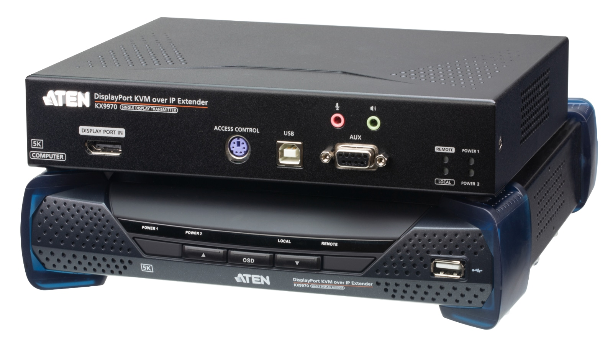

どのPCを操作する？
PCの映像出力、USB機器、必要な解像度を確認。
映像をつなぐ・整える ↗EQUIPMENT / 51
PC遠隔操作・IP-KVM
PCを置く場所と、操作する席を分ける。
KEY SPECIFICATIONS

画像を大きく見る ＋01 / ROLE & FLOW
SCREEN OUT. CONTROL BACK.
PCの設置場所を変えずに、オペレーターが画面を確認しながら操作できる構成を考えます。
役割の説明図です。映像・USB・ネットワークの対応条件と、誰が操作できるかを事前にそろえます。
02 / BEFORE YOUR BRIEF
PCの映像出力、USB機器、必要な解像度を確認。
PC設置場所、表示先、配線経路とネットワーク条件を共有。
ローカル側と遠隔側の操作権限、切替と復旧時の手順を整理。
03 / CHOOSING THE RIGHT TOOL
映像用PCを機器側に置き、離れた操作席から画面を見ながらキーボードやマウスで扱いたいときに。画面を送るだけでなく、操作を戻す構成として検討します。
PCと表示先をDisplayPortでつなぎます。複数PCの統合管理などは、CCKMと組み合わせて使います。
送信側Tと受信側Rは別々の機器です。メーカー同梱一覧では各側に電源アダプター・フットパッド・ガイドがあり、T側にはDisplayPortケーブル、USB A-Bケーブル、マウントキットも含まれます。SFP+モジュールとアクセス制御ボックスは別売。
PCと表示器の型式・端子・解像度、USB機器、操作席と台数、接続経路と帯域、管理ソフト・ライセンス、操作権限、給電と周辺部材をお聞かせください。本体・周辺機材・搬入出・設営・本番操作・撤去を分けて、必要な範囲を整理します。
04 / RELATED EQUIPMENT
DAV-02とは伝送方式が異なります。